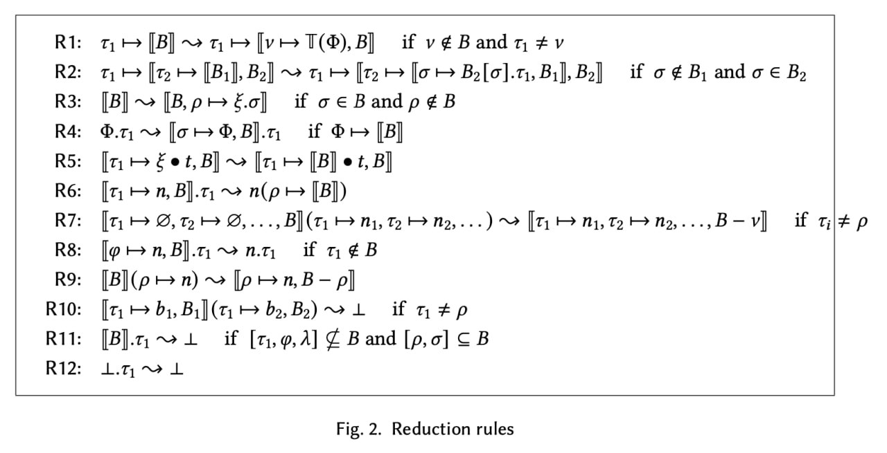

normalizer transform
MetaPHI
You can define rewrite rules for the PHI language using YAML and the MetaPHI language that is a superset of PHI.
See the MetaPHI Labelled BNF in Syntax.cf.
phi-paper rules
Currently, the PHI normalizer supports rules defined in an unpublished paper by Yegor Bugayenko.

yegor.yaml
These rules translated to MetaPHI are in yegor.yaml.
Each rule has the following structure:
name- Rule name.description- Rule description.context- (optional) Rule context. A context may contain:global-object- (optional) Global objectMetaId.current-object- (optional) Current objectMetaId.
pattern- Term pattern.- When this term pattern matches a subterm of a
PHIterm,MetaIds from the term pattern become associated with matching subexpressions of that subterm.
- When this term pattern matches a subterm of a
result- Substitution result.MetaIds in the subterm pattern get replaced by their associated subexpressions.
when- A list of conditions for pattern matching.nf- A list ofMetaIds associated with subexpressions that shoud be in normal form.present_attrs- A list of attributes that must be present in subexpression bindings.attrs- A list of attributes. Can includeMetaIds.bindings- A list of bindings that must contain these attributes.
absent_attrs- A list of attributes that must not be present in subexpression bindings.attrs- A list of attributes. Can includeMetaIds.bindings- A list of bindings that must not contain these attributes.
tests- A list of unit tests for this rule.name- Test name.input- An initialPHIterm.output- The initialPHIterm after this rule was applied.matches- Whether the term pattern should match any subterm.
Normal form
An expression is in normal form when no rule can be applied to that expression.
Environment
Repository
The commands in the following sections access files that are available in the project repository.
Clone and enter the project repository.
git clone https://github.com/objectionary/normalizer --recurse-submodules
cd normalizer
Sample program
Save a PHI program to a file.
cat > celsius.phi <<EOM
{⟦
c ↦ Φ.org.eolang.float(as-bytes ↦ Φ.org.eolang.bytes(Δ ⤍ 40-39-00-00-00-00-00-00)), // 25.0
result ↦
ξ.c.times(x ↦ ⟦ Δ ⤍ 3F-FC-CC-CC-CC-CC-CC-CD ⟧) // 1.8
.plus(x ↦ ⟦ Δ ⤍ 40-40-00-00-00-00-00-00 ⟧), // 32.0
λ ⤍ Package
⟧}
EOM
CLI
--help
normalizer transform --help
Usage: normalizer transform [-r|--rules FILE] [-c|--chain] [-j|--json] [--tex]
[-o|--output-file FILE] [-s|--single]
[--max-depth INT] [--max-growth-factor INT] [FILE]
[-d|--dependency-file FILE]
Transform a PHI program.
Available options:
-r,--rules FILE FILE with user-defined rules. If unspecified, builtin
set of rules is used.
-c,--chain Output transformation steps.
-j,--json Output JSON.
--tex Output LaTeX.
-o,--output-file FILE Output to FILE. When this option is not specified,
output to stdout.
-s,--single Output a single expression.
--max-depth INT Maximum depth of rules application. Defaults to 10.
--max-growth-factor INT The factor by which to allow the input term to grow
before stopping. Defaults to 10.
FILE FILE to read input from. When no FILE is specified,
read from stdin.
-d,--dependency-file FILE
FILE to read dependencies from (zero or more
dependency files allowed).
-h,--help Show this help text
--rules FILE
Normalize a 𝜑-expression from celsius.phi using the rules from a given file (e.g. yegor.yaml).
The output may contain multiple numbered results that correspond to different possible rule application sequences (even if the final result is the same).
normalizer transform --rules ./eo-phi-normalizer/test/eo/phi/rules/yegor.yaml celsius.phi
Rule set based on Yegor's draft
Input:
{⟦
c ↦ Φ.org.eolang.float (as-bytes ↦ Φ.org.eolang.bytes (Δ ⤍ 40-39-00-00-00-00-00-00)),
result ↦ ξ.c.times (x ↦ ⟦
Δ ⤍ 3F-FC-CC-CC-CC-CC-CC-CD
⟧
).plus (x ↦ ⟦
Δ ⤍ 40-40-00-00-00-00-00-00
⟧
),
λ ⤍ Package
⟧}
====================================================
Result 1 out of 1:
{⟦
c ↦ Φ.org.eolang.float (as-bytes ↦ Φ.org.eolang.bytes (Δ ⤍ 40-39-00-00-00-00-00-00)),
result ↦ ξ.c.times (x ↦ ⟦
Δ ⤍ 3F-FC-CC-CC-CC-CC-CC-CD
⟧
).plus (x ↦ ⟦
Δ ⤍ 40-40-00-00-00-00-00-00
⟧
),
λ ⤍ Package
⟧}
----------------------------------------------------
--chain
Use --chain to see numbered normalization steps for each normalization result.
normalizer transform --chain --rules ./eo-phi-normalizer/test/eo/phi/rules/yegor.yaml celsius.phi
Rule set based on Yegor's draft
Input:
{⟦
c ↦ Φ.org.eolang.float (as-bytes ↦ Φ.org.eolang.bytes (Δ ⤍ 40-39-00-00-00-00-00-00)),
result ↦ ξ.c.times (x ↦ ⟦
Δ ⤍ 3F-FC-CC-CC-CC-CC-CC-CD
⟧
).plus (x ↦ ⟦
Δ ⤍ 40-40-00-00-00-00-00-00
⟧
),
λ ⤍ Package
⟧}
====================================================
Result 1 out of 1:
[ 1 / 1 ] Normal form: {⟦
c ↦ Φ.org.eolang.float (as-bytes ↦ Φ.org.eolang.bytes (Δ ⤍ 40-39-00-00-00-00-00-00)),
result ↦ ξ.c.times (x ↦ ⟦
Δ ⤍ 3F-FC-CC-CC-CC-CC-CC-CD
⟧
).plus (x ↦ ⟦
Δ ⤍ 40-40-00-00-00-00-00-00
⟧
),
λ ⤍ Package
⟧}
----------------------------------------------------
--json
normalizer transform --json --chain --rules ./eo-phi-normalizer/test/eo/phi/rules/yegor.yaml celsius.phi
{
"input": "{⟦\n c ↦ Φ.org.eolang.float (as-bytes ↦ Φ.org.eolang.bytes (Δ ⤍ 40-39-00-00-00-00-00-00)),\n result ↦ ξ.c.times (x ↦ ⟦\n Δ ⤍ 3F-FC-CC-CC-CC-CC-CC-CD\n ⟧\n ).plus (x ↦ ⟦\n Δ ⤍ 40-40-00-00-00-00-00-00\n ⟧\n),\n λ ⤍ Package\n⟧}",
"output": [
[
[
"Normal form",
"{⟦\n c ↦ Φ.org.eolang.float (as-bytes ↦ Φ.org.eolang.bytes (Δ ⤍ 40-39-00-00-00-00-00-00)),\n result ↦ ξ.c.times (x ↦ ⟦\n Δ ⤍ 3F-FC-CC-CC-CC-CC-CC-CD\n ⟧\n ).plus (x ↦ ⟦\n Δ ⤍ 40-40-00-00-00-00-00-00\n ⟧\n),\n λ ⤍ Package\n⟧}"
]
]
]
}
--single
normalizer transform --single --rules ./eo-phi-normalizer/test/eo/phi/rules/yegor.yaml celsius.phi
{⟦
c ↦ Φ.org.eolang.float (as-bytes ↦ Φ.org.eolang.bytes (Δ ⤍ 40-39-00-00-00-00-00-00)),
result ↦ ξ.c.times (x ↦ ⟦
Δ ⤍ 3F-FC-CC-CC-CC-CC-CC-CD
⟧
).plus (x ↦ ⟦
Δ ⤍ 40-40-00-00-00-00-00-00
⟧
),
λ ⤍ Package
⟧}
--single --json
normalizer transform --single --json --rules ./eo-phi-normalizer/test/eo/phi/rules/yegor.yaml celsius.phi
"{⟦\n c ↦ Φ.org.eolang.float (as-bytes ↦ Φ.org.eolang.bytes (Δ ⤍ 40-39-00-00-00-00-00-00)),\n result ↦ ξ.c.times (x ↦ ⟦\n Δ ⤍ 3F-FC-CC-CC-CC-CC-CC-CD\n ⟧\n ).plus (x ↦ ⟦\n Δ ⤍ 40-40-00-00-00-00-00-00\n ⟧\n),\n λ ⤍ Package\n⟧}"
--output-file FILE
Redirects the output to file of the given path instead of stdout.
--dependency-file FILE
Injects package dependencies from a given file into the context when transforming the input. Can be used multiple times to inject multiple dependencies.
FILE not specified (read from stdin)
cat celsius.phi | normalizer transform --single --json --rules ./eo-phi-normalizer/test/eo/phi/rules/yegor.yaml
"{⟦\n c ↦ Φ.org.eolang.float (as-bytes ↦ Φ.org.eolang.bytes (Δ ⤍ 40-39-00-00-00-00-00-00)),\n result ↦ ξ.c.times (x ↦ ⟦\n Δ ⤍ 3F-FC-CC-CC-CC-CC-CC-CD\n ⟧\n ).plus (x ↦ ⟦\n Δ ⤍ 40-40-00-00-00-00-00-00\n ⟧\n),\n λ ⤍ Package\n⟧}"